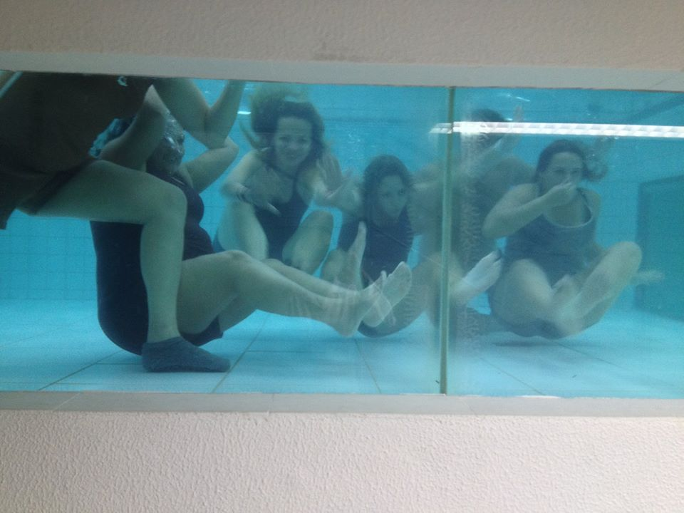
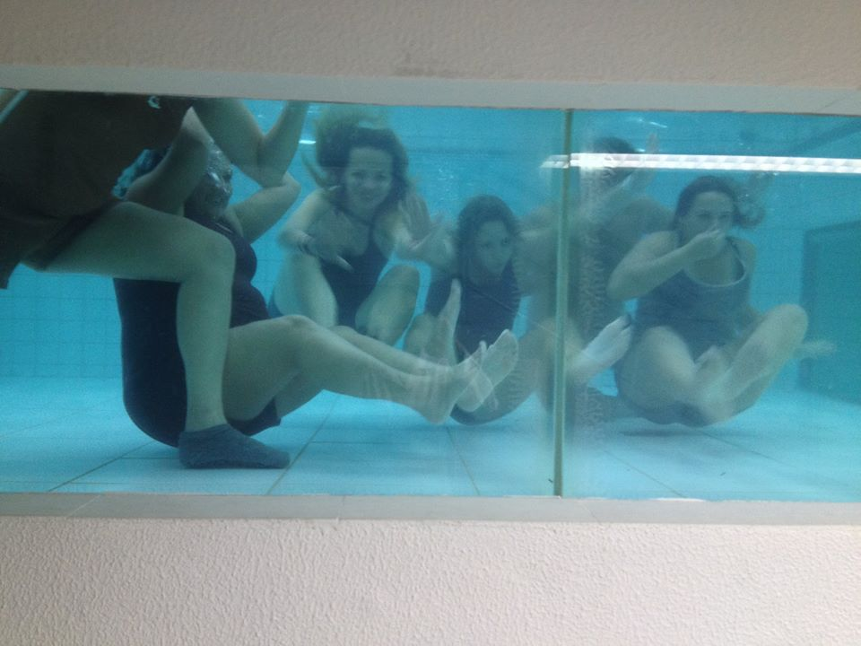
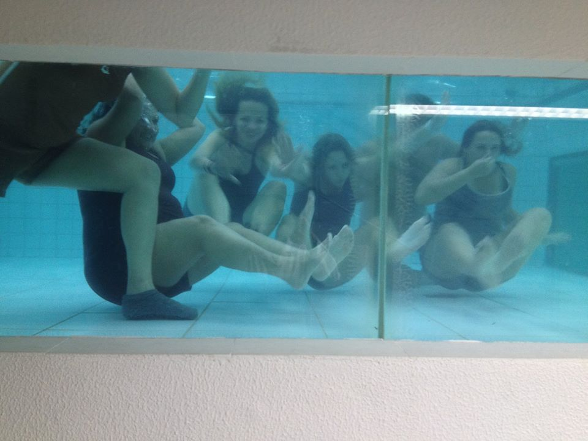

Oi, eu sou Paulo.
Um não tão jovem que sempre teve o sonho em ajudar as pessoas, sempre buscando fazer a diferença e entregando o seu melhor.
ingressei na faculdade de Fisioterapia, na cidade de São Caetano do Sul, imaginado que esta seria a minha forma de contribuir e ajudar as pessoas. Embora tivesse uma grande paixão pela computação e todo seu conhecimento, eu acreditava que dentro da Fisioterapia eu realizaria meu real sonho de poder ajudar as pessoas a minha volta.
Eu gostava muito (na verdade ainda gosto) da teoria e de todo funcionamento do corpo humano. Durante esse período eu aprendi muito não só sobre nós, seres humanos, mas sobre como funciona uma cadeira hierárquica, e como atender as pessoas de uma forma que elas fiquem confortáveis e felizes.
Me formei em 2014 e trabalhei por mais alguns anos até aceitar que o que eu gostava mesmo era aquele clima da universidade. Pessoas buscando soluções mirabolantes, professores criando desafios quase impossíveis e toda aquela intensidade de informações como em um mar de oportunidades, só esperando para que novas ideias e soluções logicas surgissem.
Após isto, resolvi buscar novos desafios e fontes de renda. Entre outras coisa, eu já fui digitador, dono de pizzaria, Dj de festas, músico de cerimônias e vendedor da Coca-Cola.
E cheguei até aqui...

Bom... Eu sempre fui apaixonado por tecnologia. E posso dizer que sou o suporte tecnico oficial da família. rsrs
Mas, a real é que a paixão por entender como as coisas funcionam surgiu a alguns anos, enquanto acessava sites simples, mas que tinham um grande poder de conectar pessoas.
Então, me veio um estalo "Ei, eu posso ajudar as pessoas criando soluções incriveis para seus dispositivos". Criando soluções inteligentes e inovadoras para facilitar e agilizar o dia a dia de cada usuário.
E assim, dei início a minha jornada através do conhecimento para poder transformar o mundo... Mesmo que seja uma pessoa de cada vez.
Snake it... again